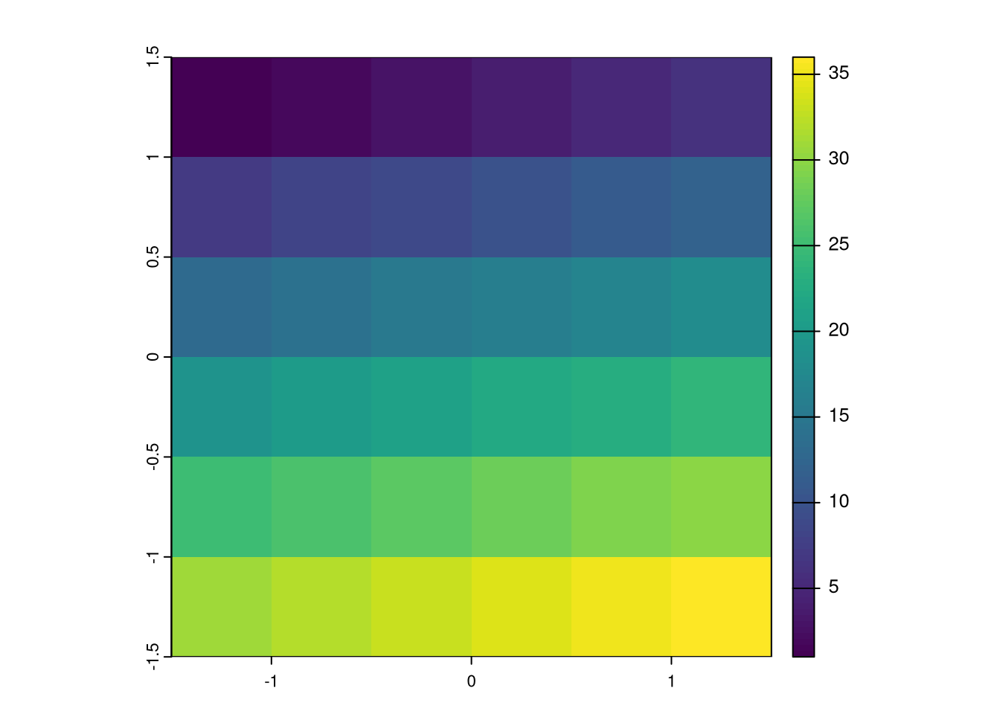

moj_df = data.frame(x = 1:10, y = 11:20)
usethis::use_data(moj_df, overwrite = TRUE)6 Tworzenie pakietów R (3)
6.1 Dane w pakietach R
Pakiety R mogą również zawierać dane. Zazwyczaj takie dane służą do trzech celów: (1) do przechowywania danych, które są używane wewnątrz pakietu, (2) do użycia w przykładach i innych formach dokumentacji, oraz (3) do testowania funkcji.
Istnieje kilka mechanizmów do przechowywania danych w pakietach R:
- Dane w postaci binarnej w folderze
data/ - Dane w postaci oryginalnej w podfolderze folderu
inst/ - Dane w postaci binarnej w pliku
R/sysdata.rda - Dane stworzone wewnątrz kodu R, np. kodu przykładu czy kodu testu
Każdy z nich ma swoje wady i zalety, szczególnie widoczne w przypadku wykorzystywania danych przestrzennych.
Komentarz
CRAN z reguły nie pozwala na umieszczanie w pakietach danych o rozmiarze większym niż ok. 5 MB. W związku z tym, jeżeli dane są większe niż 5 MB, to należy je umieścić w innym miejscu, np. na GitHubie, a wewnątrz pakietu umieścić tylko kod do ich pobrania.
6.1.1 Dane w postaci binarnej w folderze data/
Niemal każdy obiekt R można zapisać wewnątrz pakietu jako plik binarny (.rda) w folderze data/. Najprościej dodać taki obiekt używając funkcji usethis::use_data():
Powyższy kod stworzy plik data/moj_df.rda zawierający obiekt moj_df. Teraz ten obiekt jest dostępny wewnątrz pakietu i można go użyć wewnątrz funkcji, przykładów, czy testów jednostkowych.
Komentarz
Jeden z możliwych elementów opisu pakietu w pliku DESCRIPTION to LazyData. Przyjmuje on wartość true lub false i określa czy dane w folderze data/ są ładowane do pamięci podczas ładowania pakietu. W przypadku LazyData: true dane są ładowane do środowiska pracy podczas ładowania pakietu i są od razu dostępne. W przypadku LazyData: false dane są ładowane do środowiska pracy dopiero w momencie ich wywołania, np. poprzez funkcję data().
Warto kod R użyty do stworzenia takich danych umieścić w folderze data-raw/. A sam folder data-raw/ należy dodać do pliku .Rbuildignore.1 Dzięki temu możliwe będzie odtworzenie budowy takich danych w przyszłości, jeżeli zajdzie taka konieczność.
Dane załączone w ten sposób muszą być udokumentowane. Taka dokumentacja to plik o rozszerzeniu .R w folderze R/ zawierający funkcję roxygen2 z odpowiednimi tagami. Przykładowo, dla obiektu moj_df można stworzyć plik R/moj_df.R zawierający:
#' Example data
#'
#' Example data created manually for the purpose of this package.
#'
#' @format ## `moj_df`
#' A data frame with 10 observations on 2 variables.
#' \describe{
#' \item{x}{numeric vector}
#' \item{y}{numeric vector}
#' }
#' @source Manually created.
"moj_df"6.1.2 Dane w postaci oryginalnej w podfolderze folderu inst/
Wewnątrz podfolderu folderu inst/ (np. inst/data/) można umieścić dowolne pliki, które będą dostępne po zainstalowaniu pakietu. Dotyczy to, np., plików .csv ale także różnorodnych formatów GIS, .gpkg czy .tif.
Po instalacji pakietu, folder inst/ nie jest dostępny, a jego zawartość znajduje się bezpośrednio w folderze instalacyjnym pakietu. Dostępne foldery można sprawdzić używając funkcji system.file() oraz dir().
system.file(package = "spData") |> dir() [1] "data" "DESCRIPTION" "help" "html" "INDEX"
[6] "Meta" "misc" "NAMESPACE" "R" "raster"
[11] "README" "shapes" "weights" W tym przypadku mamy kilka folderów z danymi: data/, misc/, raster/, shapes/, oraz weights/. Sprawdzenie zawartości danego folderu jest możliwe poprzez podanie jego nazwy jako argumentu funkcji system.file().
system.file("raster", package = "spData") |> dir()[1] "elev.tif" "grain.tif" "grain.tif.aux.xml"Następnie można użyć funkcji system.file() do określenia ścieżki do wybranego pliku na danym komputerze.
system.file("raster/elev.tif", package = "spData")[1] "/home/jn/R/x86_64-redhat-linux-gnu-library/4.4/spData/raster/elev.tif"Znajomość tej ścieżki pozwala na wczytanie pliku do R.
library(terra)
elev = rast(system.file("raster/elev.tif", package = "spData"))
plot(elev)
Komentarz
Przechowywanie danych w postaci binarnej jest szczególnie dobrym rozwiązaniem w przypadku, gdy przechowywane obiekty mają jedną z klas wbudowanych w język R (np. ramka danych czy macierz).
Podejście oparte na przechowywaniu danych w postaci oryginalnej jest szczególnie dobre w kontekście danych przestrzennych:
- Interpretacja elementów obiektów przestrzennych (np. układu współrzędnych przez bibliotekę PROJ) zmienia się w czasie. W związku z tym, dane przestrzenne zapisane w postaci binarnej mogą być niepoprawne w przyszłości.
- Główna klasa obiektów w pakiecie terra nie przechowuje wartości, ale tylko wskaźnik (ang. pointer) C++ do pliku na dysku. W związku z tym, obiekty terra zapisane w postaci binarnej mogą nie być poprawie załadowane do pamięci podczas ładowania pakietu.
- Dane są dostępne w oryginalnym formacie, co umożliwia ich użycie poza R.
6.1.3 Dane w postaci binarnej w pliku R/sysdata.rda
Wewnątrz pakietu można umieścić dane w postaci binarnej w pliku R/sysdata.rda. Takie dane są dostępne tylko wewnątrz pakietu i nie są ładowane do środowiska pracy. Nie wymagają też dodatkowej dokumentacji.
Do stworzenia takiego pliku użyć funkcji usethis::use_data() z argumentem internal = TRUE. Należy tylko pamiętać, że plik R/sysdata.rda może zawierać więcej niż jeden obiekt i wówczas te obiekty należy zapisać w poniższy sposób.
moj_df = data.frame(x = 1:10, y = 11:20)
moj_df2 = data.frame(x = 1:10, y = 11:20)
usethis::use_data(moj_df, moj_df2, internal = TRUE)6.1.4 Dane stworzone wewnątrz kodu R
Małe dane można stworzyć bezpośrednio wewnątrz kodu R. Może to mieć miejsce przed przykładem użycia danej funkcji czy też przed testem jednostkowym.
ZADANIA
- Stwórz nowy obiekt zawierający dane przykładowe, które będzie można użyć w przykładach twojego pakietu.
- Zapisz kod tworzący ten obiekt do folderu
data-raw/. - Dodaj ten obiekt do folderu
data/używając funkcjiusethis::use_data(). - Dodaj dokumentację dla tego obiektu do folderu
R/. - Zapisz ten obiekt do zewnętrznego formatu (np.
.csv) i umieść go wewnątrz podfolderu folderuinst/. - Użyj zarówno wewnętrznych jak i zewnętrznych danych wewnątrz przykładu jakieś funkcji z twojego pakietu.
- Uruchom
devtools::document()a następniedevtools::check()i sprawdź czy wszystko działa poprawnie.
6.2 Testy jednostkowe
Testy jednostkowe (ang. unit tests) to sposób sprawdzania czy stworzona przez nas funkcja działa w sposób jaki oczekujemy. Tworzenie takich testów wymusza także myślenie na temat odpowiedniego działania funkcji i jej API. Testy jednostkowe są najczęściej stosowane w przypadku budowania pakietów, gdzie możliwe jest automatyczne sprawdzenie wielu testów na raz. Przykładowo, napisaliśmy nową funkcję, która wykonuje złożone operacje i, po wielu sprawdzeniach, wiemy, że daje poprawne wyniki. Po kilku miesiącach wpadliśmy na pomysł jak zwiększyć wydajność naszej funkcji. W tym momencie wystarczy już tylko stworzyć nową implementację i użyć wcześniej zbudowanych testów. Dadzą one informację, czy efekt działania jest taki jaki oczekujemy, a w przeciwnym razie wskażą gdzie pojawił się błąd. Istnieje też dodatkowa reguła - jeżeli znajdziesz błąd w kodzie od razu napisz test jednostkowy.
Zobaczmy jak działają testy jednostkowe na przykładzie funkcji powierzchnia(), która oblicza powierzchnię prostokąta na podstawie macierzy zawierającej współrzędne jego wierzchołków.
powierzchnia = function(x){
a = x[1, 2] - x[1, 1]
b = x[2, 2] - x[2, 1]
a * b
}Jednym z możliwych narzędzi do testów jednostkowych w R jest pakiet testthat (Wickham 2020).
library(testthat)Zawiera on szereg funkcji sprawdzających czy działanie naszych funkcji jest zgodne z oczekiwaniem. Funkcje w tym pakiecie rozpoczynają się od prefiksu expect_ (oczekuj).
W przypadku funkcji powierzchnia() oczekujemy, że wynik będzie zawierał tylko jeden element. Możemy to sprawdzić za pomocą funkcji expect_length().
nowy_p = matrix(c(0, 0, 6, 5), ncol = 2)
expect_length(powierzchnia(nowy_p), 1)Jeżeli wynik ma długość jeden to wówczas nic się nie stane. W przeciwnym razie pojawi się komunikat błędu.
Wiemy, że powierzchnia naszego przykładowego obiektu nowy_p to 30. Do sprawdzenia, czy nasza funkcja daje na tym obiekcie dokładnie taki wynik możemy użyć expect_equal().
expect_equal(powierzchnia(nowy_p), 30)W momencie, gdy wynik jest zgodny to nie nastąpi żadna reakcja, a w przeciwnym razie wystąpi błąd. W pakiecie testthat istnieją inne funkcje podobne do expect_equal(). Przykładowo, funkcja expect_identical() sprawdza nie tylko podobieństwo wartości, ale też to czy klasa wyników jest taka sama.
Aby sprawdzić czy nasza funkcja na pewno zwróci błąd w przypadku podania niepoprawnych danych wejściowych możemy użyć funkcji expect_error(). Jej działanie jest przedstawione poniżej.
expect_error(powierzchnia(3, 5, 2, "a"))
expect_error(powierzchnia(matrix(c(0, 0, 6, 5), ncol = 2)))Error: `powierzchnia(matrix(c(0, 0, 6, 5), ncol = 2))` did not throw an error.W przypadku, gdy wywołanie funkcji zwróci błąd, expect_error() nic nie zwróci. Natomiast, jeżeli wywołania funkcji nie zwróci błędu, expect_error() zatrzyma swoje działanie i zwróci komunikat. Odpowiednikami expect_error() dla ostrzeżeń jest expect_warning(), a dla wiadomości expect_message().
Pozostałe funkcje z tego pakietu są wymienione i opisane na stronie https://testthat.r-lib.org/reference/index.html.
ZADANIA
- Stwórz nowy plik
temp.R. - Wewnątrz tego pliku dodaj kilka testów sprawdzających funkcję ze swojego pakietu.
- Upewnij się, że wszystkie testy działają poprawnie (nie zwracają błędów).
6.3 Wbudowane testy
Testy jednostkowe można również wbudować wewnątrz pakietu - w efekcie, gdy naniesiemy w nim jakieś zmiany możemy sprawdzić czy otrzymujemy takie same wyniki.
Pierwszym krokiem do używania wbudowanych testów jest ustawienie odpowiedniej infrastruktury używając funkcji use_testthat(). Powoduje ona dodanie pakietu testthat do wpisu Suggests:, stworzenie folderów tests/ i tests/testthat/ oraz pliku tests/testthat.R.
use_testthat()
#> ✔ Adding 'testthat' to Suggests field in DESCRIPTION
#> ✔ Creating 'tests/testthat/'
#> ✔ Writing 'tests/testthat.R'Teraz możliwe jest napisanie testów jednostkowych. Zazwyczaj polega to na stworzeniu oddzielnego pliku dla każdej funkcji z naszego pakietu. Przykładowo, nasz pakiet zawiera funkcję powierzchnia(), dlatego też do jego testowania możemy stworzyć nowy plik tests/testthat/test-powierzchnia.R. Wewnątrz tego pliku należy sprawdzać kolejne aspekty działania kodu używając funkcji test_that(), gdzie należy podać (1) opis tego co jest sprawdzane i (2) testy wewnątrz nawiasów klamrowych. Przykładowy plik tests/testthat/test-powierzchnia.R może wyglądać w ten sposób:
nowy_p = matrix(c(0, 0, 6, 5), ncol = 2)
test_that("struktura wyniku jest poprawna", {
expect_length(powierzchnia(nowy_p), 1)
})
test_that("wartosc wyniku jest poprawna", {
expect_equal(powierzchnia(nowy_p), 30)
})
test_that("wystepuja odpowiednie bledy", {
expect_error(powierzchnia(3, 5, 2, "a"))
})Po napisaniu testów można sprawdzić czy wszystkie z nich dają odpowiedni wynik używając devtools::test()2. W efekcie wyświetlone zostaną wszystkie testy i zostanie wskazane, które z nich się nie powiodły i należy je poprawić.
6.4 Pokrycie kodu testami jednostkowymi
W przypadku testów jednostkowych możliwe jest sprawdzenie pokrycia kodu testami. Pokrycie kodu to procent kodu, który jest wykonywany podczas uruchamiania testów. W przypadku, gdy pokrycie kodu jest niskie, oznacza to, że testy nie sprawdzają wszystkich możliwych przypadków działania funkcji. Inaczej mówiąc, może to oznaczać, że pewne części kodu nie są testowane i mogą zawierać błędy lub działać niepoprawnie.
Pokrycie kodu testami można sprawdzić lokalnie używając funkcji devtools::test_coverage() lub też można użyć systemu CI/CD (o tym później), żeby sprawdzić pokrycie testami na zewnętrznym serwerze.
ZADANIA
- Przenieś testy z pliku
temp.Rdo odpowiedniego pliku wewnątrz folderutests/testthat/. - Usuń plik
temp.R. - Uruchom testy używając
devtools::test(). Czy wszystkie z nich działają poprawnie? - Spróbuj użyć danych wbudowanych w pakiet do testów.
- Uruchom
devtools::test_coverage()i sprawdź pokrycie kodu testami.
6.5 Strona internetowa pakietu
Dodatkowo w R istnieje możliwość prostego stworzenia stron internetowych dla wybranego pakietu używając pakietu pkgdown (Wickham i Hesselberth 2020). Przykład takiej strony można zobaczyć pod adresem https://pkgdown.r-lib.org/index.html.
Stworzenie strony pakietu wymaga jedynie wywołania funkcji usethis::use_pkgdown() oraz pkgdown::build_site() wewnątrz pakietu R. W efekcie działania tych funkcji zostanie utworzony folder docs/ zawierający stronę internetową reprezentującą pakiet i jego dokumentację. W przypadku, gdy pakiet znajduje się na GitHubie możliwe jest wyświetlenie tej strony pod adresem https://<nazwauzytkownika>.github.io/<nazwapakietu>/. Aby ta strona była dostępna w internecie należy na platformie GitHub wejść w zakładkę Settings, następnie znaleźć część określoną jako Pages, i określić Source jako “main branch /docs folder”.
Alternatywą dla powyższej funkcji jest usethis::use_pkgdown_github_pages(). Wykonuje ona więcej kroków automatycznie: tworzy nową gałąź Git oraz dodaje nowy plik konfiguracji GitHub Action (więcej o tym w kolejnej sekcji), który będzie starał się automatycznie budować stronę internetową pakietu w chmurze po każdej zmianie w kodzie.
6.6 CI/CD
Ciągła integracja i wdrażanie (ang. continuous integration and deployment, CI/CD) to podejście do tworzenia oprogramowania, które polega na łączeniu zmian w kodzie, a następnie automatycznym testowaniu tych zmian. Jest to szerokie podejście, które może być realizowane na wiele sposobów.
Tutaj skupimy się na paru przykładach CI/CD powiązanych z pracą nad pakietami R. Ten temat jest również mocno powiązany z kontrolą wersji oraz platformami do hostowania kodu, takimi jak GitHub, GitLab, czy Bitbucket.
Platforma GitHub oferuje CI/CD poprzez system o nazwie GitHub Actions. Przykłady działania GitHub Actions można znaleźć w zakładce Actions na stronie każdego repozytorium. W dużym skrócie, GitHub Actions pozwala na uruchamianie kodu w chmurze po przesłaniu zmiany w kodzie na platformę GitHub.3 Najprościej można wyobrazić sobie ten proces jako przesłanie kodu na chmurę należącą do GitHuba, gdzie zostaje on uruchomiony i przetestowany.4
W przypadku pakietów R, GitHub Actions może być używany do automatycznego budowania i sprawdzania pakietu (na różnych systemach operacyjnych), wykonywania testów jednostkowych, sprawdzania pokrycia kodu testami, oraz do automatycznego budowania strony internetowej pakietu. Samo używanie GitHub Actions jest możliwe poprzez dodanie pliku konfiguracyjnego do repozytorium. Taki plik (lub pliki) musi znajdować się w folderze .github/workflows/ i mieć rozszerzenie .yaml.
Przykładowy plik konfiguracyjny dla GitHub Actions może wyglądać w ten sposób:
on:
push:
branches: [main]
name: R-CMD-check
jobs:
R-CMD-check:
runs-on: ubuntu-latest
name: ubuntu-latest release
env:
GITHUB_PAT: ${{ secrets.GITHUB_TOKEN }}
R_KEEP_PKG_SOURCE: yes
steps:
- uses: actions/checkout@v3
- uses: r-lib/actions/setup-pandoc@v2
- uses: r-lib/actions/setup-r@v2
with:
r-version: release
http-user-agent: ubuntu-latest
use-public-rspm: true
- uses: r-lib/actions/setup-r-dependencies@v2
with:
extra-packages: any::rcmdcheck
needs: check
- uses: r-lib/actions/check-r-package@v2
with:
upload-snapshots: trueDodania pliku konfiguracyjnego można wykonać ręcznie lub przy pomocy funkcji usethis::use_github_action(), która pozwala na wybranie jednego z kilku szablonów. Warto zacząć od wyboru jednego z szablonów i dostosowania go do własnych potrzeb.
Powyższy plik konfiguracyjny ma na celu sprawdzenie pakietu na systemie Ubuntu. Możliwe jest także użycie systemu GitHub Actions do, np. określenia pokrycia kodu testami czy też automatycznego budowania strony internetowej pakietu. Przykłady różnych plików konfiguracyjnych związanych z pakietami R można znaleźć w repozytorium https://github.com/r-lib/actions/tree/v2/examples. W kontekście tworzenia pakietów R związanych z danymi przestrzennymi, warto sprawdzić pliki konfiguracyjne GitHub Actions już istniejących pakietów R opartych o biblioteki GDAL czy PROJ.
ZADANIA
- Dodaj do swojego pakietu plik konfiguracyjny dla GitHub Actions, który będzie sprawdzał pakiet na systemie Ubuntu.
- Prześlij zmiany na GitHuba i sprawdź czy GitHub Actions działa poprawnie.
- Dodaj do swojego pakietu plik konfiguracyjny dla GitHub Actions, który będzie sprawdzał pokrycie kodu testami. Możesz to zrobić albo rozszerzając plik konfiguracyjny z poprzedniego zadania, albo tworząc nowy plik konfiguracyjny.
- Prześlij zmiany na GitHuba i sprawdź czy GitHub Actions działa poprawnie.
- Dodaj do swojego pakietu plik konfiguracyjny dla GitHub Actions, który będzie budował stronę internetową pakietu. Możesz to zrobić albo rozszerzając plik konfiguracyjny z poprzedniego zadania, albo tworząc nowy plik konfiguracyjny.
- Prześlij zmiany na GitHuba i sprawdź czy GitHub Actions działa poprawnie oraz czy strona internetowa pakietu istnieje.
- W przypadku, gdy wszystko działa poprawnie, dodaj dwie nowe linie do pliku
DESCRIPTIONzawierające linki do strony internetowej pakietu oraz do repozytorium pakietu:
URL: https://ja.github.io/mojpakiet/
BugReports: https://github.com/ja/mojpakiet/issues6.7 CRAN
CRAN (Comprehensive R Archive Network) to repozytorium zawierające pakiety R. Wszystkie pakiety znajdujące się w tym repozytorium są sprawdzane pod kątem zgodności z wymaganiami na kilku systemach operacyjnych. Wymagania można znaleźć pod adresami https://cran.r-project.org/web/packages/policies.html oraz https://cran.r-project.org/web/packages/submission_checklist.html. Co ważne, wymagania te zmieniają się w czasie.5
Komentarz
Tworzenie nowych narzędzi daje często satysfakcję. Należy jednak pamiętać, że narzędzia komputerowe są zależne od innych narzędzi, które mogą się zmieniać w czasie. W związku z tym, narzędzia komputerowe wymagają stałej uwagi oraz konserwacji (ang. maintenance).
Podejście stosowane przez CRAN kładzie odpowiedzialność za poprawność działania pakietu na jego autorach. W zamian, potencjalni użytkownicy mogą mieć pewność, że pakiet jest zgodny z wymaganiami CRAN, działa poprawnie i jest możliwy do zainstalowania na różnych systemach operacyjnych. Dodatkowo, CRAN tworzy wersje binarne pakietów dla systemów Windows i Mac OS, co znacznie ułatwia i przyspiesza ich instalację.
Komentarz
Wcześniej przedstawiona funkcja devtools::check() sprawdza pakiet pod kątem różnych testów, ale nie sprawdza czy jest on w pełni zgodny z wymaganiami CRAN. Wynika to z kilku kwestii. Trzy najważniejsze to: 1. Niektóre z wymagań są sprawdzane manualnie przez CRAN team. 2. Niektóre z wymagań nie są w pełni znane. 3. CRAN sprawdza pakiety na różnych systemach operacyjnych, a devtools::check() sprawdza pakiet tylko na systemie, na którym jest uruchomiony.
W momencie gdy uważam, że pakiet jest w wersji stabilnej i gotowy do wysłania na CRAN, wykonuję następujące kroki:
# 1 dodaję dokumentację
devtools::document()
# 2 testuję pakiet
devtools::check()
# 3 sprawdzam czy pakiet jest zgodny z wymaganiami CRAN
rcmdcheck::rcmdcheck(args = c("--no-manual", "--as-cran"))
# 4 sprawdzam czy wszystkie linki w dokumentacji działają
# install.packages("urlchecker", repos = "https://r-lib.r-universe.dev")
urlchecker::url_check()
urlchecker::url_update()
# 5 aktualizuję NEWS i wersję pakietu
# 6 wysyłam pakiet do CRAN
devtools::submit_cran()Bardziej złożone (i kompletne) podejście do przygotowania pakietu do CRAN jest opisane na stronie https://github.com/ThinkR-open/prepare-for-cran.
Po wywołaniu ostatniej z funkcji należy potwierdzić swój adres email, a następnie kliknąć w otrzymany mailowo link. W efekcie pakiet zostanie wysłany do CRAN, gdzie zostanie sprawdzony przez automatyczne narzędzia.
W przypadku wysłania pakietu do CRAN po raz pierwszy, jest on sprawdzony manualnie przez jedną z osób w tzw. CRAN team. Taka osoba może albo zaakceptować pakiet, albo poprosić o poprawienie błędów i przesłanie pakietu ponownie.
Aktualizowanie pakietu przebiega w ten sam sposób – poprzez wywołanie devtools::submit_cran().6 Wtedy pakiet zostanie sprawdzony przez automatyczne narzędzia. W przypadku, gdy automatyczne testy zwrócą jakieś problemy (ostrzeżenia lub notatki), zostanie on również obejrzany przez CRAN team. Warto pamiętać, że nie należy aktualizować wersji CRAN pakietu częściej niż raz na miesiąc.
Komentarz
Możliwe jest sprawdzenie statusu pakietu przesłanego na CRAN na stronie https://r-hub.github.io/cransays/articles/dashboard.html.
Gdy pakiet jest już na CRAN, ale nie jest zgodny z nowymi wymaganiami, otrzyma się prośbę o jego naprawę, a w przypadku nie naniesienie poprawek, zostanie on usunięty z CRAN (archived).
Komentarz
Wysyłanie pakietu na CRAN nie jest jedynym sposobem na jego udostępnienie. W różnych sytuacjach możliwe jest też udostępnienie pakietu na innych repozytoriach, np. na GitHubie, GitLabie, Bitbucket, lub na własnym serwerze. Inne możliwości to np. użycie systemu drat lub r-universe. Powyższe rozwiązania nie mają takich samych wymagań jak CRAN, ale wymagają więcej od potencjalnego użytkownika. Dodatkowo, bioconductor to repozytorium zawierające pakiety R związane z bioinformatyką.
Można też użyć funkcji
usethis::use_data_raw().↩︎Testy są też automatycznie uruchamiane podczas sprawdzania pakietu↩︎
Możliwe jest też uruchamianie kodu co zadany czas.↩︎
Należy pamiętać, że GitHub Actions nie jest w pełni darmowy.↩︎
Niektóre zasady działania CRAN są krytykowane, co można przeczytać pod adresem https://github.com/cranchange/cran_change.org.↩︎
Możliwe jest też wysłanie pakietu do CRAN za pomocą strony https://cran.r-project.org/submit.html.↩︎